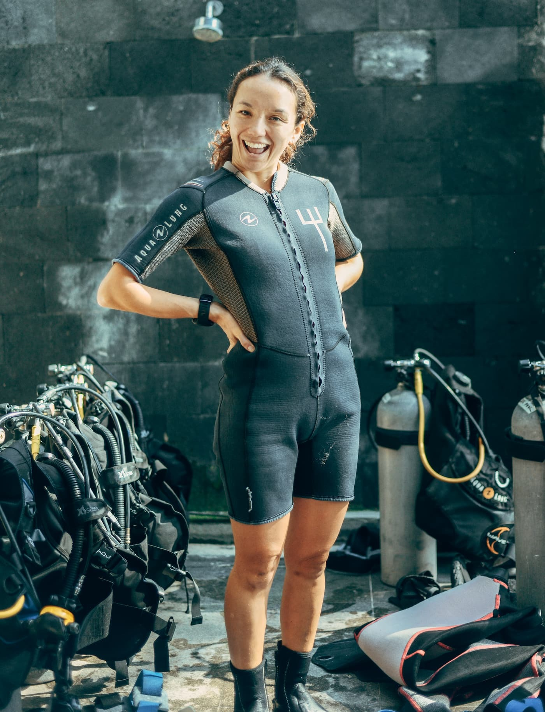

Many divers feel excited about becoming instructors but feel confused about what instructor-level training actually demands. The shift from recreational diving to professional education can feel overwhelming. Candidates often underestimate the physical effort, mental pressure, and responsibility involved. Without proper understanding, this can lead to stress, poor performance, or loss of confidence during training.
This article explains what you need to know before starting instructor training. It outlines the key differences between recreational and professional diving, explains why preparation matters, and sets clear expectations for physical fitness, mental readiness, and professional conduct. Understanding these factors in advance helps candidates prepare properly and approach instructor training with confidence and realistic goals.
Many divers believe that being a scuba instructor is only about diving skills. This misunderstanding often leads to unrealistic expectations when entering instructor training. Teaching others requires a different mindset than diving for personal enjoyment.
A scuba diving instructor transitions from being a skilled diver to becoming an educator and leader. Core responsibilities include teaching dive theory, demonstrating practical skills clearly, and ensuring student safety at all times. Instructors must also manage real-world dive situations, such as changing conditions or student stress. Because of this, instructor training focuses heavily on leadership, communication, and decision-making. Strong diving ability is important, but the ability to guide, support, and protect students is what truly defines a professional instructor.
Many candidates enter instructor training without fully understanding the entry requirements. Missing certifications, low dive numbers, or poor fitness can create stress and slow progress during the course. This often leads to frustration and reduced confidence early in training.
Certification and Experience Requirements
Before starting instructor training, candidates must meet minimum certification levels set by the training agency. This usually includes Divemaster certification and a required number of logged dives. Logged dives should cover varied conditions such as deep dives, navigation dives, and different environments. Diverse dive experience builds awareness and prepares candidates for real teaching situations.
Medical and Fitness Considerations
Instructor candidates must complete health screenings to confirm fitness to dive. Physical endurance is important because training involves long days and multiple dives. Stress tolerance underwater is also essential, as instructors must stay calm while managing students and unexpected situations. Proper preparation improves performance and safety throughout training.
Many candidates struggle during instructor training because their basic skills are not yet stable. Weak buoyancy, rushed movements, or poor control make demonstrations harder and increase stress during evaluations.
Before starting instructor training, you should be fully comfortable with neutral buoyancy in all conditions. You must be able to demonstrate skills clearly in both confined and open water. Equipment problem-solving should feel natural, not forced. Controlled ascents and descents are essential for safety and for setting a good example to students. Strong fundamentals reduce mental load during training and allow you to focus on teaching quality rather than fixing personal skill gaps.
Some divers underestimate how much theory is tested at instructor level. Limited academic preparation often leads to exam pressure and repeated assessments during training.
Instructor candidates must understand the physics and physiology of diving, including pressure, buoyancy, and how the body reacts underwater. Equipment theory and basic maintenance knowledge are also required. Dive planning and decompression concepts must be explained clearly and accurately. Theory knowledge is heavily evaluated because instructors must answer student questions, plan safe dives, and make correct decisions. Strong academic readiness supports confident teaching and professional credibility.
Instructor training can be mentally demanding, especially for candidates who are not prepared for constant evaluation. Long training days, frequent assessments, and performance pressure can feel overwhelming without the right mindset.
Strong time management skills are essential to balance study, diving, and rest. Candidates must be comfortable receiving feedback and applying it quickly, even when corrections feel challenging. Confidence under evaluation helps maintain clear demonstrations and communication. Stress management is also critical during exams and teaching assessments. A professional attitude ties everything together. Punctuality, responsibility, and respect for standards are closely observed throughout training. Professional behaviour shows readiness to move from diver to instructor.
Many divers entering instructor training underestimate how challenging teaching can be. Knowing how to dive well does not automatically mean you can explain skills clearly or guide students with confidence. Weak communication often becomes a major hurdle during evaluations.
Instructor candidates must learn how to translate technical knowledge into simple, clear explanations that beginners can understand. Teaching styles need to adapt to different learning speeds and personalities. Strong briefing and debriefing techniques are essential to prepare students before dives and reinforce learning afterward. Underwater communication must also be precise, using clear hand signals and calm body language.
Structured instructor development programs, such as PADI IDC BALI, place strong emphasis on teaching quality and communication skills. This focus ensures instructors can guide students safely, confidently, and professionally in both theory sessions and real dive environments.
Instructor training is not judged by a single final test. Many candidates struggle because they expect assessment to be limited to one examination. In reality, evaluation happens throughout the entire course.
Assessments are performance-based and focus on how consistently skills are demonstrated. Candidates are evaluated during academic sessions, confined water teaching, and open water presentations. Common struggle areas include unclear explanations, weak demonstrations, or poor time control. Consistency matters more than perfection. Instructors are expected to perform skills to a reliable standard every time, not perfectly once. Understanding how assessment works helps candidates focus on steady improvement instead of unnecessary pressure.
Instructor training requires a serious time commitment. Days are often long and structured around diving, studying, and teaching practice.
Candidates must balance physical effort, academic preparation, and teaching performance. This combination makes instructor training mentally demanding. Without proper rest and recovery, fatigue can affect focus and performance. Managing energy levels is just as important as managing study time.
Many divers begin instructor training with incorrect assumptions. One common belief is that instructor courses are simply advanced diving programs. In reality, they focus heavily on teaching, leadership, and responsibility. Another misconception is that experience alone is enough. While experience helps, it does not replace clear communication and structured teaching ability. Some candidates also believe that passing the course automatically creates teaching confidence. In practice, confidence develops through preparation and experience after certification. Instructor training involves professional-level expectations that go far beyond personal dive skills.
Instructor training should be viewed as the foundation of a long-term career, not just a certification goal. It opens opportunities to teach around the world and work in diverse dive environments. Ongoing education is required to maintain standards and expand teaching options. Professional responsibility and reputation grow with every student taught. Understanding this long-term perspective helps candidates commit fully and approach training with the right mindset.
Business Name:
PADI IDC Gili Trawangan – Gili Islands – Indonesia
Phone:
+62 821 4785 0413
Address:
Main Beach Road, Gili Indah, Gili Trawangan, Kabupaten Lombok Utara, NTB 83355
Description:
This operation represents an example of an island-based instructor development setting where professional scuba education may take place. It reflects how structured training programs can combine academic preparation, practical teaching development, and real open water exposure under experienced supervision.
Starting instructor training is a major step that requires more than strong diving skills. Understanding the role, expectations, and demands of professional-level education helps candidates prepare properly. Technical ability, academic knowledge, mental readiness, and communication skills all play important roles in success.
Approaching instructor training with realistic expectations and a professional mindset reduces stress and improves performance. Proper preparation allows candidates to focus on teaching quality, safety, and leadership. When divers understand what lies ahead, they are better equipped to transition confidently from recreational diver to capable and responsible scuba diving instructor.